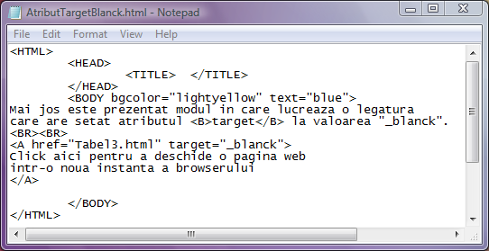
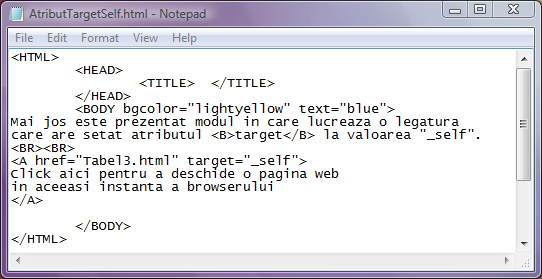
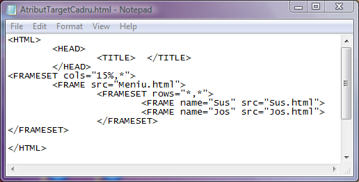

Stabilirea ferestrei in care se va deschide pagina web
Decizia locului in care se va deschide pagina web tinta a unei legaturi este luata de
catre browser pe baza valorii atributului target al etichetei A.
In cazul in care nu este prezent atributul target, browserul va incarca noua pagina web
in locul celei vechi, in aceeasi instanta a browserului (in aceeasi fereastra).
Valorile atributului target pot fi:
a)target="_blanck"
In acest caz pagina web tintita de legatura se va incarca intr-o noua instanta a browserului.
Dati click pe codul de mai jos pentru a deschide pagina web.

b)target="_self"
In acest caz pagina web tinta va lua locul vechii pagini in aceeasi instanta a browserului.
Aceasta este optiunea implicita, in cazul absentei atributului target.
Dati click pe codul de mai jos pentru a deschide pagina web.

Daca se doreste incarcarea paginii web tinta intr-unul din cadrele paginii web care contine
legatura, atunci ca valoare a atributului target se va folosi numele acelui cadru
setat cu atributul name al etichetei FRAME.
c)target="nume_cadru"
Iata mai jos un exemplu in care mai multe pagini web se incarca in cadre ale paginii web
parinte.

Inapoi la Legaturi